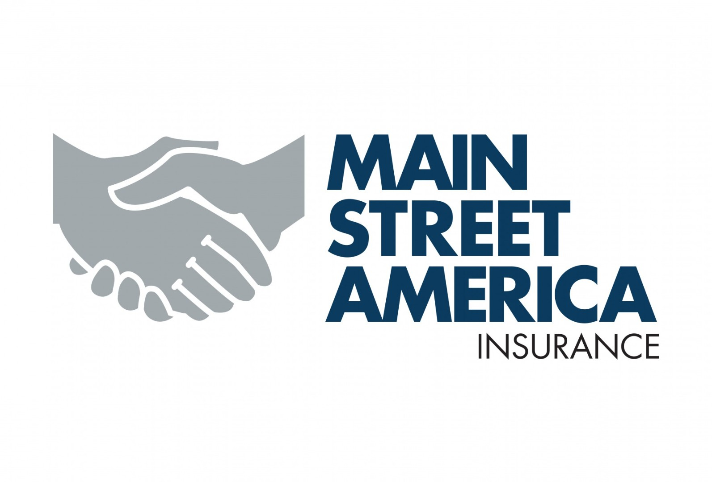

HCS – Healthcare Compute Solution (IQVIA)
Azure Cloud Solutions Architect · IQVIA · 2022–Present
Azure Infrastructure as a Service (IaaS) and Platform as a Service (PaaS) components designed on Microsoft Azure Resource Types. HCS has existing Azure subscription with Azure AD Domain Services & Virtual Networks/On-premises VPN connectivity for product and engineering. Quarterly data refresh using ADF pipeline.